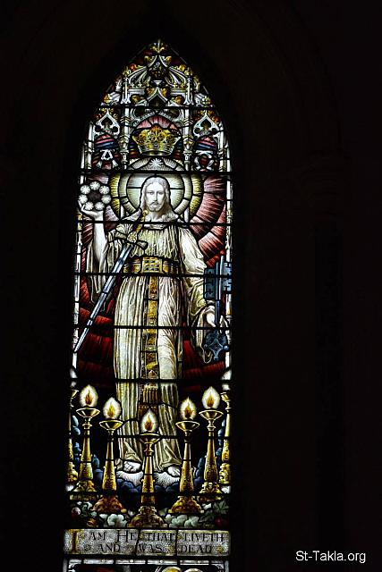
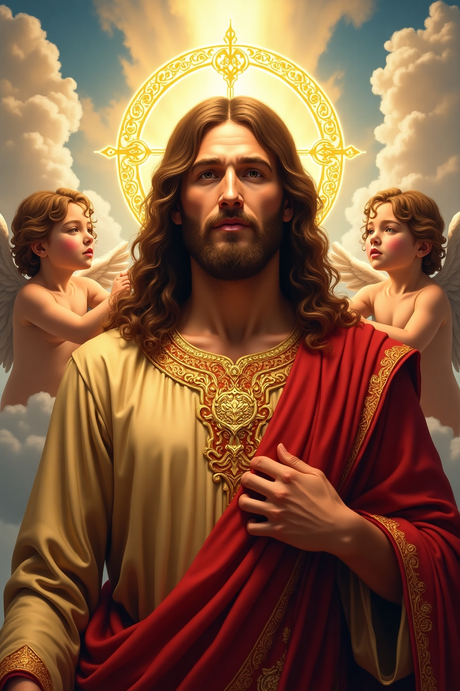

هذا التشبيه يدل على **مجد لاهوته** و**الاستعداد للخدمة والسلطة**. المنطقة الذهبية تشير إلى **الكرامة، النبل، والغنى المطلق** الذي يميز الذات الإلهية. عادة ما كانت الأحزمة (المناطق) تستخدم لتجميع الثياب استعداداً للعمل أو للسلطة.
التشبيه:
يرمز إلى **الملك المتربع على عرشه**، والذي يتمتع بسلطان كامل ومجد لا يوصف، وهو جاهز للقيام بعمله الإلهي في الدينونة والرعاية.
يدل هذا على **الأزلية، القدم، الحكمة، والنقاوة المطلقة**. اللون الأبيض يرمز إلى الطهارة والنقاء، والشعر الأبيض يرمز إلى الحكمة والخبرة الطويلة التي لا بداية لها ولا نهاية. هذه الصفة تشير إلى **الله الأزلي الأبدي** الذي كان قبل كل الدهور ولا يتغير.
التشبيه:
يشبه **شيخوخة حكيمة وكريمة**، لكنها هنا تشير إلى كمال وجوده الأزلي الذي لا يعرف بداية أو نهاية، وأنه هو **القديم الأيام** الذي يمتلك كل المعرفة والحكمة.

رسم يوضح نقاء وحكمة الأزلية.
عَيْنَاهُ كَلَهِيبِ نَارٍ
النص الكتابي:
"...وَعَيْنَاهُ كَلَهِيبِ نَارٍ." (الرؤيا 1: 14)
المعنى:
ترمز إلى **المعرفة الكلية، الاختراق، الدينونة، والقدرة على فحص كل شيء**. لا يوجد شيء مخفي عن عينيه، فهو يرى كل خفي وظاهر. تشير هذه العيون إلى **بصيرة الله التي تميز بين الحق والباطل**، وتكشف النوايا الخفية. ترمز لـ **تفحص كل شيء**.
التشبيه:
مثل **النار التي تكشف وتطهر وتحرق كل ما هو غير نقي**، عينيه تخترقان أعماق القلوب وتكشف الحقائق، كما أنها تعبر عن **غيرة الله المقدسة** ضد الشر والخطيئة.
يدل هذا على **الاستقرار، الثبات، قوة الدينونة، والقدرة على سحق الأعداء**. النحاس النقي المحمى يشير إلى المتانة والقوة التي لا تتزعزع. هذه الصفة تظهر **عدل الله الذي يدوس على الشر** ويقيم مملكة البر. دليل على **المتانة والثبات**.
التشبيه:
يشبه **أساسًا قويًا وثابتًا لا يمكن زعزعته**، ويرمز أيضًا إلى قدرته على الدوس على الشر والدينونة العادلة. كما يشير إلى **نقاوة طرق الله** وعمله الذي لا تشوبه شائبة.
يشير إلى **القوة، السلطة، المهابة، والشمولية**. صوت الله له تأثير عظيم ويصل إلى كل مكان، فهو يغطي كل شيء. هذا التشبيه يعبر عن **كلمة الله الفعالة** التي تحدث وتخلق وتدين، ولا يمكن لأحد أن يقف أمامها. دليل على **القوة والرهبة**.
التشبيه:
مثل **شلالات عظيمة أو أمواج المحيط الهادرة**، صوته قوي ومهيب، لا يمكن تجاهله أو مقاومته. يعبر عن **السيادة المطلقة** لله الذي بكلمته خلق السماوات والأرض.
يرمز إلى **كلمة الله الحية والفعالة، القادرة على الفصل بين الحق والباطل، والحكم والدينونة**. هذه الكلمة تخترق النفوس والأرواح، وتميز الخفي من الظاهر. هي **كلمة القوة والتغيير** التي تنفذ وتدين.
التشبيه:
مثل **السيف الذي يقطع ويخترق كل شيء**، كلمة الله قاطعة وحاسمة، تفصل بين النور والظلمة. إنها **كلمة الله التي تدين** الخطية وتكشف الزيف، وتعلن الحق المطلق.
يدل على **المجد المطلق، النور الإلهي، البريق، والقداسة**. وجه الله يشع نورًا لا يطاق في مجده وعظمته. هذه الصفة تؤكد **بهاء الله وكماله** الذي لا يمكن إدراكه بالكامل بالعين البشرية. دليل على **الضياء الشديد**.
التشبيه:
يشبه **الشمس في أوج قوتها وسطوعها**، لا يمكن لأحد أن ينظر إليها مباشرة بسبب شدة ضوئها، وهذا يرمز إلى بهاء مجد الله الذي لا يمكن إدراكه بشكل كامل، وإلى **نوره الذي يبدد كل ظلمة**.
هذا الظهور يرمز إلى **المهابة والمجد العظيم للسيد المسيح في لاهوته**. رد فعل يوحنا بالسقوط كالميت يدل على عظمة هذا الظهور وعدم قدرة الإنسان على تحمل بهاء المجد الإلهي. تأكيد المسيح أنه "الأول والآخر والحي" وله مفاتيح الهاوية والموت يؤكد على **أزليته، أبدية، قيامته، وسلطانه المطلق على الحياة والموت**.
التشبيه:
يشبه هذا الظهور **الرؤى العظيمة للأنبياء** التي تدل على حضور الله وقوته. إنه يرمز إلى **مجد المسيح بعد القيامة والصعود**، وسلطانه على كل شيء، وأنه هو الرب الحقيقي الذي له كل السيادة والقوة.

مشهد مهيب لظهور المسيح ليوحنا، رمزاً للمجد والسلطان.
كانت كنيسة أفسس تتميز بالأعمال الجيدة والصبر وعدم تحمل الشر، لكنها فقدت **محبتها الأولى** للمسيح وللآخرين. هذا يشير إلى خطر الروتين الديني وفقدان الشغف الروحي.
الدرس:
الأعمال الصالحة مهمة، لكن يجب أن تكون مدفوعة بالمحبة الخالصة للمسيح. يدعو الرب للتوبة والعودة إلى الشغف والحيوية الروحية الأولى.
كنيسة برغامس كانت تعيش في "حيث كرسي الشيطان" (مركز عبادة الأوثان)، وكانت متمسكة بالإيمان. لكن بعض أعضائها سمحوا بتعاليم خاطئة (مثل تعليم بلعام) تتسلل إليهم، مما أدى إلى **الخطايا الأخلاقية وعبادة الأوثان**.
الدرس:
حتى في بيئة صعبة، يجب على المؤمنين التمسك بالحق ورفض أي تسوية مع الشر أو التعاليم الخاطئة. الطاعة لكلمة الله أهم من مجرد الحفاظ على الاسم.
تميزت كنيسة ثياتيرا بالأعمال الكثيرة والمحبة والخدمة، لكنها تسامحت مع امرأة تدعي النبوة (إيزابل) وكانت تقود المؤمنين إلى **الخطية الأخلاقية وعبادة الأوثان**.
الدرس:
ليس كافيًا أن تكون لديك أعمال صالحة، بل يجب أيضًا أن تكون صارمًا ضد الشر والتعاليم الخاطئة داخل الكنيسة. التساهل مع الخطية يقود إلى الفساد الروحي.
.jpg)